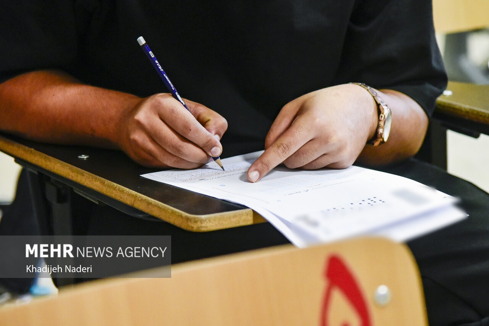

<!-- HMD-010 · deck source. Build: make decks  →  deck-fa.html + deck-en.html
     Every visible string is a pair <t-fa>…</t-fa><t-en>…</t-en>; text outside a pair is shown in both decks. -->

<style>
.hook{display:grid;grid-template-columns:580px 1fr;gap:64px;align-items:center;max-width:1664px}
.hook .photo{margin:0}
.hook .photo img{display:block;width:580px;height:auto;border-radius:4px}
.hook .photo figcaption{margin-top:10px;font-size:20px;line-height:1.35;color:var(--muted-night)}
.hook .tokens{flex-wrap:wrap}
table.t td.w{color:var(--amber-ink);font-weight:700}
table.t td.num{font-variant-numeric:tabular-nums;white-space:nowrap}
table.t.flip th,table.t.flip td{padding:12px 26px}
.cols .real{border-top-color:var(--amber)}
</style>

<section class="cover">
<h1><t-fa>نمرهٔ منفی می‌تواند AI را <em>محتاط‌تر</em> کند؟</t-fa><t-en>Can negative marking make an AI more <em>careful</em>?</t-en></h1>
<p class="promise"><t-fa>نمرهٔ منفی یک «آستانهٔ جواب» می‌سازد؛ ولی AI فقط وقتی محتاط‌تر می‌شود که قانون را بشنود و اطمینانش صادق باشد.</t-fa><t-en>Negative marking sets an "answer threshold"; but an AI only gets more careful if it hears the rule and its confidence is honest.</t-en></p>
</section>

<section class="frame night" id="beat-1" data-start="0">
<h1><t-fa>سؤال ۱۳۷. دو گزینه مانده. <em>بزنی یا رها کنی؟</em></t-fa><t-en>Question 137. Two options left. <em>Answer or skip?</em></t-en></h1>
<div class="hook">
<figure class="photo"><figcaption><t-fa>کنکور ۱۴۰۵، اصفهان، ۲۹ مرداد · عکس: خدیجه نادری، خبرگزاری مهر · CC BY 4.0 · اطلاعات شخصی محو شده</t-fa><t-en>Konkur 2026 (1405), Isfahan, 20 Aug · Photo: Khadijeh Naderi, Mehr News Agency · CC BY 4.0 · personal details blurred</t-en></figcaption></figure>
<div class="tokens"><i class="off"><t-fa>۱</t-fa><t-en>1</t-en></i><i><t-fa>۲</t-fa><t-en>2</t-en></i><i class="off"><t-fa>۳</t-fa><t-en>3</t-en></i><i><t-fa>۴</t-fa><t-en>4</t-en></i></div>
</div>
<p class="caption"><t-fa>کنکور ۱۴۰۵: <em>۱٬۰۷۰٬۲۴۱</em> متقاضی. هر کدام، سر هر سؤال، بین «جواب» و «نمی‌دانم».</t-fa><t-en>Konkur 1405: <em>1,070,241</em> applicants. Each one, on every question, between "answer" and "I don't know".</t-en></p>
<footer><t-fa>شمار متقاضیان: معاون آزمون‌های سازمان سنجش، همشهری‌آنلاین، ۲۶ مرداد ۱۴۰۵</t-fa><t-en>Applicant count: Sanjesh deputy for examinations, Hamshahri Online, 17 Aug 2026</t-en></footer>
<aside class="notes"><t-fa><b>سؤال ۱۳۷</b><p>[B-ROLL CUE] عکس واقعی کنکور ۱۴۰۵ (مداد بالای پاسخ‌برگ؛ بعد چهرهٔ مردد، media/beat01_…hesitation). نمای «دو گزینه خط‌خورده» را با پاسخ‌برگ بازسازی‌شدهٔ خودت بگیر، بدون لوگو یا سند رسمی؛ صدای تیک‌تاک ساعت. کات روی «من محمدم…».</p><p>هم داوطلب کنکور و هم AI، هر بار بین «جواب» و «نمی‌دونم» انتخاب می‌کنن.</p></t-fa><t-en><b>Question 137</b><p>[B-ROLL CUE] Real Konkur 1405 photo (pencil over the answer sheet; then a hesitating face, media/beat01_…hesitation). Film the "two options crossed out" close-up yourself on a reconstructed sheet, with no logo or official document; a ticking clock. Cut on "I'm Mohammad…".</p><p>Both a Konkur candidate and an AI choose, every time, between "answer" and "I don't know".</p></t-en></aside>
</section>

<section class="frame paper" id="beat-2" data-start="54">
<p class="kicker"><t-fa>قانون کنکور · اول حدس بزن</t-fa><t-en>The Konkur rule · guess first</t-en></p>
<div class="cols">
<div><span><t-fa>جواب درست</t-fa><t-en>Right</t-en></span><b class="word"><t-fa>مثبت ۳</t-fa><t-en>+3</t-en></b></div>
<div><span><t-fa>جواب غلط</t-fa><t-en>Wrong</t-en></span><b class="word"><t-fa>منفی ۱</t-fa><t-en>−1</t-en></b></div>
<div><span><t-fa>سفید</t-fa><t-en>Blank</t-en></span><b class="word"><t-fa>صفر</t-fa><t-en>0</t-en></b></div>
</div>
<p class="sub"><t-fa>حدس کور بین چهار گزینه:</t-fa><t-en>A blind guess among four options:</t-en> <bdi dir="ltr">¼ × 3 − ¾ × 1 = <em>0</em></bdi></p>
<p class="caption"><t-fa>یک گزینه را رد کردی و بین سه تا می‌زنی: سود یا ضرر؟</t-fa><t-en>You ruled out one option and pick among three: gain or loss?</t-en></p>
<footer><t-fa>قاعدهٔ رایج کنکور · Zoomit (منبع ثانویه) · حدس کور = ۰: قسمت «چطور با همان جواب‌ها، برندهٔ AI عوض می‌شود؟»</t-fa><t-en>Common Konkur rule · Zoomit (secondary source) · blind guess = 0: episode "How do the same answers change the AI winner?"</t-en></footer>
<aside class="notes"><t-fa><b>قانون کنکور</b><p>[GRAPHIC] سه کارت امتیاز؛ زیرش یادآوری «حدس کور = ۰» از قسمت «چطور با همان جواب‌ها…»، بعد سؤال حدسی «یک گزینه رد شد: سود یا ضرر؟» با شمارش معکوس ۳ ثانیه. برچسب کوچک: <bdi dir="ltr">Konkur · +3 / −1 (common rule)</bdi>.</p><p>با قاعدهٔ سه به یک، حدسِ کاملاً کور صفر می‌ارزه؛ سؤال امروز حدسِ نیمه‌آگاهه.</p></t-fa><t-en><b>The Konkur rule</b><p>[GRAPHIC] Three score cards; below them the "blind guess = 0" reminder from "How do the same answers change the AI winner?", then the guess question "one option ruled out: gain or loss?" with a 3-second countdown. Small label: Konkur · +3 / −1 (common rule).</p><p>Under the three-to-one rule, a completely blind guess is worth zero; today's question is the half-informed guess.</p></t-en></aside>
</section>

<section class="frame paper" id="beat-3" data-start="94">
<p class="kicker"><t-fa>صفر، یک‌نهم، یک‌سوم</t-fa><t-en>Zero, one-ninth, one-third</t-en></p>
<div class="code sm"><span class="c">$ python3 artifact/penalty_threshold.py        # excerpt: section 2</span>
2) KONKUR ARITHMETIC (4 options, wrong = -1/3 of a right answer)
   blind guess, 4 options left      P= 1/4  expected value =     0 of a right answer (+0.000)
   one option eliminated, 3 left    P= 1/3  expected value =   1/9 of a right answer (+0.111)
<span class="o">   two options eliminated, 2 left   P= 1/2  expected value =   1/3 of a right answer (+0.333)</span>
   -> this penalty makes BLIND guessing worth zero on average; it does not forbid informed guessing</div>
<p class="tag"><t-fa>به واحد یک جواب درست · میانگین است، نه تضمین · فقط اگر پنجاه‌پنجاهِ تو واقعاً پنجاه‌پنجاه باشد</t-fa><t-en>In units of one right answer · an average, not a guarantee · only if your 50–50 really is 50–50</t-en></p>
<p class="caption"><t-fa>«نامهٔ آموزش عالی»، زمستان ۱۳۸۷: ترسِ نمرهٔ منفی ممکن است نگذارد داوطلب توانایی واقعی‌اش را نشان دهد.</t-fa><t-en><i>Nameh-ye Amoozesh-e Aali</i> (Higher Education Letter), winter 2009: fear of negative marking may stop a candidate from showing their real ability.</t-en></p>
<footer><t-fa>artifact/penalty_threshold.py · بخش ۲ · حساب دقیق</t-fa><t-en>artifact/penalty_threshold.py · section 2 · exact arithmetic</t-en></footer>
<aside class="notes"><t-fa><b>صفر، یک‌نهم، یک‌سوم</b><p>[UNEXPECTED STAT] خروجی بخش ۲ از penalty_threshold.py؛ سه ردیف با کسرهای دقیق؛ ردیف «دو گزینه» کهربایی. بازگشت کوتاه به تصویر مداد قاب ۱.</p><p>نمرهٔ منفی کنکور حدس کور رو صفر می‌کنه، ولی حدسِ آگاهانه رو هنوز سودمند نگه می‌داره.</p></t-fa><t-en><b>Zero, one-ninth, one-third</b><p>[UNEXPECTED STAT] Section 2 of penalty_threshold.py's output; three rows with exact fractions; the "two options" row in amber. A short return to the pencil shot from beat 1.</p><p>Konkur negative marking makes a blind guess worth zero, but still keeps an informed guess worthwhile.</p></t-en></aside>
</section>

<section class="frame paper" id="beat-4" data-start="162">
<p class="kicker"><t-fa>آستانهٔ جواب</t-fa><t-en>The answer threshold</t-en></p>
<h1><t-fa>فقط وقتی جواب بده که احتمال درست‌بودن از <em>k/(k+1)</em> بیشتر است</t-fa><t-en>Answer only if the chance of being right is above <em>k/(k+1)</em></t-en></h1>
<div class="bars">
<div><span>k = 0</span><i style="--v:0"></i><span><t-fa>۰٪</t-fa><t-en>0%</t-en></span></div>
<div><span><t-fa>کنکور <bdi dir="ltr">k = 1/3</bdi></t-fa><t-en>Konkur k = 1/3</t-en></span><i style="--v:25"></i><span><t-fa>۲۵٪</t-fa><t-en>25%</t-en></span></div>
<div><span>k = 1</span><i style="--v:50"></i><span><t-fa>۵۰٪</t-fa><t-en>50%</t-en></span></div>
<div class="hi"><span>k = 3</span><i style="--v:75"></i><span><t-fa>۷۵٪</t-fa><t-en>75%</t-en></span></div>
<div><span>k = 9</span><i style="--v:90"></i><span><t-fa>۹۰٪</t-fa><t-en>90%</t-en></span></div>
</div>
<footer><t-fa>قانون نمره: درست مثبت ۱ · «نمی‌دانم» صفر · غلط منفی k</t-fa><t-en>Scoring rule: right +1 · "I don't know" 0 · wrong −k</t-en></footer>
<aside class="notes"><t-fa><b>آستانهٔ جواب</b><p>[GRAPHIC] جدول بخش ۱ اسکریپت، پنج ردیف از <bdi dir="ltr">k = 0 → 0%</bdi> تا <bdi dir="ltr">k = 9 → 90%</bdi>؛ ردیف <bdi dir="ltr">k = 3</bdi> کهربایی. یک خط افقی «answer threshold» روی محور احتمال که با k بالا می‌رود.</p><p>با جریمهٔ k، فقط وقتی جواب بده که احتمال درست‌بودنت از k تقسیم بر k به‌علاوهٔ یک بیشتره.</p></t-fa><t-en><b>The answer threshold</b><p>[GRAPHIC] The table from section 1 of the script, five rows from k = 0 → 0% to k = 9 → 90%; the k = 3 row in amber. A horizontal "answer threshold" line on the probability axis that rises with k.</p><p>With a penalty of k, answer only if your chance of being right is above k divided by k+1.</p></t-en></aside>
</section>

<section class="frame paper" id="beat-5" data-start="224">
<p class="kicker"><t-fa>چرا AI حدس می‌زند</t-fa><t-en>Why AI guesses</t-en></p>
<h1><t-fa>بیشتر امتحان‌های AI: درست ۱ · غلط ۰ · «نمی‌دانم» ۰ ← آستانهٔ جواب <em>صفر</em></t-fa><t-en>Most AI tests: right 1 · wrong 0 · "I don't know" 0 → answer threshold <em>zero</em></t-en></h1>
<div class="cards">
<div><b><t-fa>تشبیه مقاله</t-fa><t-en>The paper's analogy</t-en></b><t-fa>مثل دانش‌آموز سر سؤال سخت، مدل‌ها در عدم‌قطعیت حدس می‌زنند.</t-fa><t-en>Like students on hard exam questions, models guess when uncertain.</t-en></div>
<div><b><t-fa>آزمون‌های جریمه‌دار، به نقل مقاله</t-fa><t-en>Exams with penalties, as the paper lists</t-en></b><t-fa>JEE · NEET · GATE · AMC · SAT / AP / GRE (سال‌های قبل)</t-fa><t-en>JEE · NEET · GATE · AMC · SAT / AP / GRE (earlier years)</t-en></div>
<div class="hi"><b><t-fa>پیشنهاد</t-fa><t-en>The proposal</t-en></b><t-fa>قانون را در دستور بگو: فقط اگر بیش از t مطمئنی، جواب بده.</t-fa><t-en>State the rule in the prompt: answer only if more than t confident.</t-en></div>
</div>
<p class="caption"><t-fa>اگر بازکردن قانون‌های امتحان AI به کارت می‌آید، هومودین هر هفته یکی را باز می‌کند.</t-fa><t-en>If unpacking the rules behind AI tests is useful to you, Homodyne unpacks one every week.</t-en></p>
<footer><t-fa>R01 · Kalai، Nachum، Vempala، Zhang · Why Language Models Hallucinate · ۲۰۲۵</t-fa><t-en>R01 · Kalai, Nachum, Vempala, Zhang · Why Language Models Hallucinate · 2025</t-en></footer>
<aside class="notes"><t-fa><b>چرا AI حدس می‌زند</b><p>[CAMERA CHANGE] کات به نمای نزدیک برای CTA. بعد [GRAPHIC] کارت منبع R01 (Kalai و همکاران، سپتامبر ۲۰۲۵) با نقل کوتاه دربارهٔ دانش‌آموز و حدس، و فهرست آزمون‌های جریمه‌داری که خود مقاله نام برده: <bdi dir="ltr">JEE · NEET · GATE · AMC · SAT/AP/GRE (earlier years)</bdi>.</p><p>وقتی امتحان AI نمرهٔ منفی نداره، آستانهٔ جواب صفره و حدس‌زدن همیشه می‌صرفه.</p></t-fa><t-en><b>Why AI guesses</b><p>[CAMERA CHANGE] Cut to a close-up for the CTA. Then [GRAPHIC] the R01 source card (Kalai et al., Sep 2025) with a short quote about the student and guessing, and the list of penalised exams the paper itself names: JEE · NEET · GATE · AMC · SAT/AP/GRE (earlier years).</p><p>When an AI test has no negative marking, the answer threshold is zero and guessing always pays.</p></t-en></aside>
</section>

<section class="frame paper" id="beat-6" data-start="274">
<p class="kicker"><t-fa>یک غلط در خود مقاله</t-fa><t-en>A mistake in the paper itself</t-en></p>
<div class="source"><q><bdi dir="ltr">“t = 0.75 (penalty <em>2</em>)”</bdi></q><cite><t-fa>Kalai و همکاران · arXiv 2509.04664v1، ۴ سپتامبر ۲۰۲۵ · بخش ۴٫۲ · ولی فرمول خودشان <bdi dir="ltr">t/(1−t)</bdi> می‌دهد <bdi dir="ltr">0.75 / 0.25 = 3</bdi></t-fa><t-en>Kalai et al. · arXiv 2509.04664v1, 4 Sep 2025 · section 4.2 · but their own formula t/(1−t) gives 0.75 / 0.25 = 3</t-en></cite></div>
<p class="caption"><t-fa>قسمت «چطور با همان جواب‌ها، برندهٔ AI عوض می‌شود؟»: برای ۷۵٪، جریمه ۳ · جواب‌نامه‌ها هم غلط دارند؛ قسمت «اگر جواب‌نامه غلط باشد، کدام AI می‌بازد؟» یادت هست؟</t-fa><t-en>"How do the same answers change the AI winner?": for 75%, the penalty is 3 · Answer keys have mistakes too; remember "If the answer key is wrong, which AI loses?"</t-en></p>
<footer><t-fa>arXiv 2509.04664v1 · بخش ۴٫۲</t-fa><t-en>arXiv 2509.04664v1 · section 4.2</t-en></footer>
<aside class="notes"><t-fa><b>یک غلط در خود مقاله</b><p>[UNEXPECTED STAT] تصویر واقعی همان بند: media/beat06_kalai2025_sec4-2_penalty2_CC-BY-4.0.jpg (بخش ۴٫۲، arXiv 2509.04664v1، CC BY 4.0)؛ عدد ۲ کهربایی؛ کنارش محاسبهٔ <bdi dir="ltr">0.75 / 0.25 = 3</bdi>. [SOUND EFFECT] صدای «تیک» تصحیح.</p><p>مثال عددی مقاله با فرمول خودش جور نیست؛ ایده درسته، ولی عدد رو خودت حساب کن.</p></t-fa><t-en><b>A mistake in the paper itself</b><p>[UNEXPECTED STAT] The real paragraph: media/beat06_kalai2025_sec4-2_penalty2_CC-BY-4.0.jpg (section 4.2, arXiv 2509.04664v1, CC BY 4.0); the number 2 in amber; next to it the calculation 0.75 / 0.25 = 3. [SOUND EFFECT] A correction "tick".</p><p>The paper's worked example does not match its own formula; the idea is right, but do the arithmetic yourself.</p></t-en></aside>
</section>

<section class="frame paper" id="beat-7" data-start="331">
<p class="kicker"><t-fa>نمره‌دادن دوباره · دادهٔ واقعی</t-fa><t-en>Rescoring · real data</t-en></p>
<h1><t-fa>همان جواب‌ها، چهار قانون: <em>بالای جدول</em> مدام عوض می‌شود</t-fa><t-en>Same answers, four rules: <em>the top keeps changing</em></t-en></h1>
<table class="t flip">
<tr><th><t-fa>مدل</t-fa><t-en>Model</t-en></th><th><t-fa>درست</t-fa><t-en>Right</t-en></th><th><t-fa>بی‌جریمه <bdi dir="ltr">k = 0</bdi></t-fa><t-en>No penalty, k = 0</t-en></th><th><t-fa>کنکور <bdi dir="ltr">k = 1/3</bdi></t-fa><t-en>Konkur, k = 1/3</t-en></th><th><t-fa>قانون خود آزمون <bdi dir="ltr">k = 1</bdi></t-fa><t-en>The test's own rule, k = 1</t-en></th><th><bdi dir="ltr">k = 3</bdi></th></tr>
<tr><td>GPT-5 (high)</td><td class="num"><t-fa>۳۹٪</t-fa><t-en>39%</t-en></td><td class="num w"><t-fa>۳۹</t-fa><t-en>39</t-en></td><td class="num"><t-fa>۲۲٫۵</t-fa><t-en>22.5</t-en></td><td class="num"><t-fa>منفی ۱۱</t-fa><t-en>−11</t-en></td><td class="num"><t-fa>منفی ۱۰۹</t-fa><t-en>−109</t-en></td></tr>
<tr><td>Grok 4</td><td class="num"><t-fa>۳۹٪</t-fa><t-en>39%</t-en></td><td class="num w"><t-fa>۳۹</t-fa><t-en>39</t-en></td><td class="num w"><t-fa>۲۶٫۰</t-fa><t-en>26.0</t-en></td><td class="num"><t-fa>۱</t-fa><t-en>1</t-en></td><td class="num"><t-fa>منفی ۷۸</t-fa><t-en>−78</t-en></td></tr>
<tr><td>Claude 4.1 Opus</td><td class="num"><t-fa>۳۶٪</t-fa><t-en>36%</t-en></td><td class="num"><t-fa>۳۶</t-fa><t-en>36</t-en></td><td class="num w"><t-fa>۲۵٫۸</t-fa><t-en>25.8</t-en></td><td class="num w"><t-fa>۴٫۸</t-fa><t-en>4.8</t-en></td><td class="num"><t-fa>منفی ۵۶</t-fa><t-en>−56</t-en></td></tr>
<tr><td>Claude 4.5 Haiku</td><td class="num"><t-fa>۱۶٪</t-fa><t-en>16%</t-en></td><td class="num"><t-fa>۱۶</t-fa><t-en>16</t-en></td><td class="num"><t-fa>۸٫۷</t-fa><t-en>8.7</t-en></td><td class="num"><t-fa>منفی ۶</t-fa><t-en>−6</t-en></td><td class="num w"><t-fa>منفی ۴۹٫۵</t-fa><t-en>−49.5</t-en></td></tr>
</table>
<p class="tag"><b><t-fa>واقعی · حساب ما</t-fa><t-en>REAL · our arithmetic</t-en></b><t-fa>امتیاز در هر ۱۰۰ سؤال؛ سکوتِ کامل = صفر · ستون <bdi dir="ltr">k = 1</bdi> عدد چاپ‌شدهٔ مقاله؛ بقیه حساب ما روی عددهای گردشده · کهربایی = بالای ستون؛ دو کهربایی = هم‌اول در حد گردکردن · با <bdi dir="ltr">k = 3</bdi> هر چهار زیر صفر · هیچ مدلی دوباره اجرا نشد</t-fa><t-en>Points per 100 questions; silence on everything = 0 · the k = 1 column is the paper's printed index; the rest is our arithmetic on rounded numbers · amber = top of the column; two ambers = tied within rounding · at k = 3 all four are below zero · no model was re-run</t-en></p>
<footer><t-fa>R08 · AA-Omniscience، arXiv 2511.13029، نوامبر ۲۰۲۵، CC BY 4.0 · artifact/penalty_threshold.py بخش ۵</t-fa><t-en>R08 · AA-Omniscience, arXiv 2511.13029, Nov 2025, CC BY 4.0 · artifact/penalty_threshold.py section 5</t-en></footer>
<aside class="notes"><t-fa><b>همان جواب‌ها، چهار قانون</b><p>[GRAPHIC] جدول را ستون‌به‌ستون با هر جمله روشن کن؛ [SOUND EFFECT] «تیک» هر بار که برنده عوض می‌شود. نام مدل‌ها را فارسی بخوان: جی‌پی‌تی پنج، گراک چهار، کلود اوپوس، کلود هایکو. بگو حساب مال توست و عددها گرد شده‌اند. اجرای زنده: python3 artifact/penalty_threshold.py (بخش ۵).</p><p>با همان جواب‌ها، فقط با عوض‌کردن جریمه، برندهٔ جدول عوض می‌شه؛ رفتار رو فقط اجرای تازه نشون می‌ده.</p></t-fa><t-en><b>Same answers, four rules</b><p>[GRAPHIC] Light the table column by column with each sentence; [SOUND EFFECT] a "tick" each time the winner changes. Read the model names in Persian: GPT-5, Grok 4, Claude Opus, Claude Haiku. Say the arithmetic is yours and the numbers are rounded. Live run: python3 artifact/penalty_threshold.py (section 5).</p><p>With the same answers, only changing the penalty changes the table's winner; only a fresh run shows behaviour.</p></t-en></aside>
</section>

<section class="frame paper" id="beat-8" data-start="431">
<p class="kicker"><t-fa>پاسخ‌دهندهٔ کالیبره · <bdi dir="ltr">k = 3</bdi> · اول حدس بزن</t-fa><t-en>Calibrated answerer · k = 3 · guess first</t-en></p>
<div class="cols">
<div><span><t-fa>همیشه جواب بده</t-fa><t-en>Always answer</t-en></span><b><t-fa>منفی ۰٫۷۹</t-fa><t-en>−0.79</t-en></b><p><t-fa>امتیاز برای هر سؤال</t-fa><t-en>Points per question</t-en></p></div>
<div class="hi"><span><t-fa>فقط بالای ۷۵٪ جواب بده</t-fa><t-en>Answer only above 75%</t-en></span><b><t-fa>مثبت ۰٫۱۳</t-fa><t-en>+0.13</t-en></b><p><t-fa>به ۲۹٪ سؤال‌ها جواب می‌دهد · ۱۴٪ جواب‌ها غلط</t-fa><t-en>Answers 29% of questions · 14% of answers wrong</t-en></p></div>
</div>
<p class="tag"><b><t-fa>ساختگی</t-fa><t-en>ILLUSTRATIVE</t-en></b><t-fa>۱٬۰۰۰ سؤال ساختگی · پاسخ‌دهنده‌های شبیه‌سازی‌شده، نه مدل زبانی</t-fa><t-en>1,000 made-up questions · simulated answerers, not language models</t-en></p>
<footer><t-fa>artifact/penalty_threshold.py · بخش ۴ · seed 5</t-fa><t-en>artifact/penalty_threshold.py · section 4 · seed 5</t-en></footer>
<aside class="notes"><t-fa><b>پاسخ‌دهندهٔ صادق</b><p>[B-ROLL CUE] ضبط صفحه از اجرای python3 artifact/penalty_threshold.py؛ بخش ۴. برچسب ثابت <bdi dir="ltr">ILLUSTRATIVE · simulated answerers, not language models</bdi>.</p><p>اگه اطمینان صادق باشه، رعایت آستانهٔ جواب با جریمهٔ بالا امتیاز رو از منفی به مثبت می‌بره.</p></t-fa><t-en><b>The honest answerer</b><p>[B-ROLL CUE] Screen recording of python3 artifact/penalty_threshold.py; section 4. Fixed label ILLUSTRATIVE · simulated answerers, not language models.</p><p>If the confidence is honest, respecting the answer threshold under a high penalty takes the score from negative to positive.</p></t-en></aside>
</section>

<section class="frame paper" id="beat-9" data-start="497">
<p class="kicker"><t-fa>بیش‌ازحد مطمئن</t-fa><t-en>Overconfident</t-en></p>
<div class="cols">
<div><span><t-fa>شبیه‌سازی · بیش‌ازحد مطمئن · <bdi dir="ltr">k = 3</bdi></t-fa><t-en>Simulation · overconfident · k = 3</t-en></span><b><t-fa>منفی ۰٫۰۵</t-fa><t-en>−0.05</t-en></b><p><t-fa>صادق: مثبت ۰٫۱۳ · همان قانون، اطمینانِ باد‌کرده</t-fa><t-en>Honest: +0.13 · same rule, inflated confidence</t-en></p></div>
<div class="hi"><span><t-fa>واقعی · یک دستورِ یکسان برای همه</t-fa><t-en>Real · one identical instruction for all</t-en></span><b><t-fa>۸۱٪ در برابر ۲۶٪</t-fa><t-en>81% vs 26%</t-en></b><p><t-fa>از سؤال‌هایی که درست جواب نداد، چند درصد را غلط جواب داد: GPT-5 (high) در برابر Claude 4.5 Haiku</t-fa><t-en>Of the questions it did not answer correctly, the share it answered wrongly: GPT-5 (high) vs Claude 4.5 Haiku</t-en></p></div>
</div>
<p class="tag"><b><t-fa>ساختگی</t-fa><t-en>ILLUSTRATIVE</t-en></b><t-fa>شبیه‌سازی، نه مدل زبانی</t-fa><t-en>simulation, not language models</t-en> <b><t-fa>واقعی</t-fa><t-en>REAL</t-en></b><t-fa>AA-Omniscience؛ حالتِ بی‌دستور گزارش نشده</t-fa><t-en>AA-Omniscience; no no-instruction condition reported</t-en></p>
<p class="sub"><t-fa>دستور آزمون: <bdi dir="ltr">“it is better that you say this than get the wrong answer.”</bdi> قانون سر جایش است؛ <em>قطب‌نما</em> را از بیرون نمی‌بینیم.</t-fa><t-en>The test's instruction: “it is better that you say this than get the wrong answer.” The rule is fine; we cannot see the <em>compass</em> from outside.</t-en></p>
<footer><t-fa>penalty_threshold.py بخش ۳ · seed 5 (ساختگی) · R08 AA-Omniscience، بخش ۳٫۱ و پیوست A.1، CC BY 4.0</t-fa><t-en>penalty_threshold.py section 3 · seed 5 (ILLUSTRATIVE) · R08 AA-Omniscience, section 3.1 and appendix A.1, CC BY 4.0</t-en></footer>
<aside class="notes"><t-fa><b>بیش‌ازحد مطمئن</b><p>[CAMERA CHANGE] نمای نزدیک برای جملهٔ re-hook؛ بعد ستون راست (ساختگی). با «این فقط توی کد نیست» ستون چپ (واقعی) و B-roll: فقط برش دستور واقعی، media/beat09_aa-omniscience_prompt-A1، با اعتبار روی تصویر (شکل ۷ را HMD-006 نشان داده؛ اینجا تکرار نشود). جملهٔ «نمی‌دونیم بدون اون جمله چی می‌شد» را حتماً بگو.</p><p>آستانهٔ جواب فقط کسی رو به امتیاز مثبت می‌رسونه که اطمینانش با واقعیت جور باشه؛ مدل‌های واقعی با یه دستور یکسان، رفتارهای خیلی متفاوتی دارن.</p></t-fa><t-en><b>Overconfident</b><p>[CAMERA CHANGE] Close-up for the re-hook line; then the simulated column. On "and this isn't only in code", the real column and B-roll: only the crop of the real instruction, media/beat09_aa-omniscience_prompt-A1, credited on screen (figure 7 was shown in HMD-006; do not repeat it). Always say the line "we don't know what would happen without that sentence".</p><p>The answer threshold only brings someone to a positive score if their confidence matches reality; real models behave very differently under one identical instruction.</p></t-en></aside>
</section>

<section class="frame paper" id="beat-10" data-start="576">
<p class="kicker"><t-fa>سؤال واقعی</t-fa><t-en>The real question</t-en></p>
<h1><t-fa>یک مدل واقعی قانون را <em>می‌شنود</em>؟</t-fa><t-en>Does a real model <em>listen</em> to the rule?</t-en></h1>
<div class="steps">
<div><b>plain</b><t-fa>هیچ قانونی گفته نمی‌شود؛ همان حالتی که AA-Omniscience گزارش نکرد</t-fa><t-en>No rule stated; the condition AA-Omniscience did not report</t-en></div>
<div><b>t50</b><t-fa>غلط = منفی ۱</t-fa><t-en>Wrong = −1</t-en></div>
<div><b>t75</b><t-fa>غلط = منفی ۳</t-fa><t-en>Wrong = −3</t-en></div>
<div><b>t90</b><t-fa>غلط = منفی ۹</t-fa><t-en>Wrong = −9</t-en></div>
</div>
<p class="caption"><t-fa>همان سؤال‌ها، جواب تازه برای هر دستور، برچسب درست / غلط / «نمی‌دانم». سه عدد: پوشش، ریسک، امتیاز.</t-fa><t-en>Same questions, fresh answers for each prompt, labelled right / wrong / "I don't know". Three numbers: coverage, risk, score.</t-en></p>
<p class="tag"><t-fa>«محتاط‌تر» پیش از اجرا تعریف می‌شود: غلط کمتر، بی‌آنکه همان‌قدر جواب درست از دست برود</t-fa><t-en>"More careful" is defined before the run: fewer errors without losing as many right answers</t-en></p>
<footer><t-fa>طرح آزمایش · examples/bluff-v1/production-v3/scoring-guide.md</t-fa><t-en>Experiment design · examples/bluff-v1/production-v3/scoring-guide.md</t-en></footer>
<aside class="notes"><t-fa><b>سؤال واقعی</b><p>[CAMERA CHANGE] کات به نمای مدیوم. روی دک چهار کارت شرط؛ زیرشان سه سنجه: <bdi dir="ltr">coverage · risk · score</bdi> و قاعدهٔ ازپیش‌نوشته.</p><p>فقط یه اجرای تازه با چند دستور نشون می‌ده مدل قانون رو می‌شنوه یا نه.</p></t-fa><t-en><b>The real question</b><p>[CAMERA CHANGE] Cut to a medium shot. On the deck, four condition cards; below them three measures: coverage · risk · score, and the rule written in advance.</p><p>Only a fresh run with several prompts shows whether the model hears the rule.</p></t-en></aside>
</section>

<section class="frame paper" id="beat-11" data-start="630">
<p class="kicker"><t-fa>آزمایشی که هنوز اجرا نشده</t-fa><t-en>An experiment not run yet</t-en></p>
<h1><t-fa>یک مدل، چهار دستور: <em>سه</em> نتیجهٔ ممکن</t-fa><t-en>One model, four prompts: <em>three</em> possible outcomes</t-en></h1>
<div class="cards">
<div><b><t-fa>الف · محتاط‌تر</t-fa><t-en>A · More careful</t-en></b><t-fa>غلط کمتر، همان جواب‌های درست</t-fa><t-en>Fewer errors, same correct answers</t-en></div>
<div><b><t-fa>ب · بی‌تغییر</t-fa><t-en>B · No change</t-en></b><t-fa>نمره جابه‌جا می‌شود، رفتار نه</t-fa><t-en>The score moves, the behaviour does not</t-en></div>
<div><b><t-fa>ج · فقط کم‌حرف‌تر</t-fa><t-en>C · Just quieter</t-en></b><t-fa>«نمی‌دانم» بیشتر، ولی جواب‌های درست هم از دست رفته</t-fa><t-en>More "I don't know", but correct answers lost too</t-en></div>
</div>
<p class="tag"><b><t-fa>اجرا نشده</t-fa><t-en>NOT RUN YET</t-en></b><t-fa>طراحی شده، هنوز اجرا نشده · نتیجهٔ واقعی، با نام و نسخهٔ مدل، در ویدیوی جدا</t-fa><t-en>Designed, not run yet · the real result, with the model's name and version, in a separate video</t-en></p>
<footer><t-fa>یک مدل · plain / t50 / t75 / t90 · نتیجه در ویدیوی پیگیری</t-fa><t-en>One model · plain / t50 / t75 / t90 · result in a follow-up video</t-en></footer>
<aside class="notes"><t-fa><b>آزمایشی که هنوز اجرا نشده</b><p>[GRAPHIC] کارت NOT RUN YET و سه نتیجهٔ ممکن، هر سه هم‌وزن؛ هیچ عددی روی صفحه نیست. از بیننده بخواه حدسش را کامنت کند.</p><p>آزمایش طراحی شده ولی هنوز اجرا نشده؛ معنای هر سه نتیجهٔ ممکن از قبل روشن است.</p></t-fa><t-en><b>An experiment not run yet</b><p>[GRAPHIC] The NOT RUN YET card and three possible outcomes, all three with equal weight; no numbers on screen. Ask viewers to post their guess in the comments.</p><p>The experiment is designed but not run yet; what each of the three possible outcomes means is clear in advance.</p></t-en></aside>
</section>

<section class="frame paper" id="beat-12" data-start="669">
<p class="kicker"><t-fa>k را چه کسی تعیین می‌کند؟</t-fa><t-en>Who sets k?</t-en></p>
<h1><t-fa><em>k</em> جهانی وجود ندارد.</t-fa><t-en>There is no universal <em>k</em>.</t-en></h1>
<div class="cards">
<div><b><t-fa>بازی حدس اسم فیلم</t-fa><t-en>Guess-the-movie game</t-en></b><t-fa>غلط = یک خنده ← k کوچک</t-fa><t-en>Wrong = a laugh → small k</t-en></div>
<div class="hi"><b><t-fa>قانون مرجوعی فروشگاه</t-fa><t-en>Store return policy</t-en></b><t-fa>غلط = دردسر واقعی ← k بزرگ‌تر</t-fa><t-en>Wrong = a real problem → larger k</t-en></div>
<div><b>AA-Omniscience</b><t-fa><bdi dir="ltr">k = 1</bdi> · سکوت کامل ← رتبهٔ چهارم از ۳۶ · پیشنهاد خودشان: شاید منفی ۰٫۵</t-fa><t-en>k = 1 · total silence → 4th of 36 · their own suggestion: maybe −0.5</t-en></div>
<div><b><t-fa>«نمی‌دانم»</t-fa><t-en>"I don't know"</t-en></b><t-fa>همیشه مجانی نیست (ارجاع به پشتیبانی)</t-fa><t-en>Is not always free (hand-off to support)</t-en></div>
</div>
<footer><t-fa>R08 · AA-Omniscience · arXiv 2511.13029 · نوامبر ۲۰۲۵</t-fa><t-en>R08 · AA-Omniscience · arXiv 2511.13029 · Nov 2025</t-en></footer>
<aside class="notes"><t-fa><b>k را چه کسی تعیین می‌کند؟</b><p>[B-ROLL CUE] سه تصویر کوتاه: بازی حدس اسم فیلم با دوستان، رسید خرید و قانون مرجوعی، و (فقط نماد) یک داروخانهٔ عمومی بدون توصیهٔ پزشکی. کارت AA-Omniscience: <bdi dir="ltr">k = 1</bdi>؛ مدلی که به هیچ سؤالی جواب ندهد چهارم از ۳۶ می‌شود؛ نویسنده‌ها پیشنهاد کرده‌اند شاید نسخهٔ بعد منفی ۰٫۵ باشد.</p><p>k یه انتخاب محصوله، نه یه عدد جهانی.</p></t-fa><t-en><b>Who sets k?</b><p>[B-ROLL CUE] Three short shots: a guess-the-movie game with friends, a shop receipt and its return policy, and (as a symbol only) a generic pharmacy, with no medical advice. AA-Omniscience card: k = 1; a model that answers nothing would rank 4th of 36; the authors suggest the next version might use −0.5.</p><p>k is a product choice, not a universal number.</p></t-en></aside>
</section>

<section class="frame night" id="beat-13" data-start="725">
<p class="kicker"><t-fa>مرز ادعا</t-fa><t-en>Claim boundary</t-en></p>
<div class="boundary">
<div><b><t-fa>این قسمت نشان می‌دهد</t-fa><t-en>This shows</t-en></b><t-fa>با قانون مثبت ۱، صفر، منفی k، آستانهٔ جواب <bdi dir="ltr">k/(k+1)</bdi> است. قاعدهٔ رایج کنکور حدس کور را صفر می‌کند. با عددهای واقعی، فقط عوض‌کردن جریمه برنده را عوض کرد. در شبیه‌سازی، این قانون فقط به اطمینانِ صادق کمک می‌کند.</t-fa><t-en>With +1 / 0 / −k, the answer threshold is k/(k+1). The common Konkur rule makes a blind guess worth zero. With real numbers, only changing the penalty changed the winner. In simulation, the rule only helps an honest confidence.</t-en></div>
<div class="no"><b><t-fa>این قسمت نشان نمی‌دهد</t-fa><t-en>This does not show</t-en></b><t-fa>اینکه مدل‌های امروزی کالیبره‌اند یا نه · پاسخ‌دهنده‌های ما مدل زبانی نبودند · آن چهار مدل مال یک آزمون و یک زمان‌اند، نه رتبهٔ امروز · نمره‌دادن دوباره به جواب‌های قدیمی جای اجرای تازه را نمی‌گیرد</t-fa><t-en>Whether today's models are calibrated · our answerers were not language models · those four models belong to one test at one time, not today's ranking · rescoring old answers never replaces a fresh run</t-en></div>
</div>
<footer><t-fa>مرز ادعای HMD-010</t-fa><t-en>HMD-010 claim boundary</t-en></footer>
<aside class="notes"><t-fa><b>مرز ادعا</b><p>[CAMERA CHANGE] نمای ثابت؛ کارت مرز ادعا.</p><p>حساب، دادهٔ منتشرشده و شبیه‌سازی رو نشون دادیم؛ رفتار مدل واقعی فقط از اجرا میاد.</p></t-fa><t-en><b>Claim boundary</b><p>[CAMERA CHANGE] A static shot; the claim-boundary card.</p><p>We showed the arithmetic, the published data and the simulation; a real model's behaviour only comes from a run.</p></t-en></aside>
</section>

<section class="frame night" id="beat-14" data-start="760">
<p class="kicker"><t-fa>جواب</t-fa><t-en>The answer</t-en></p>
<h1><t-fa>روی کاغذ، بله. در عمل، فقط اگر مدل <em>گوش بدهد</em> و اطمینانش صادق باشد.</t-fa><t-en>On paper, yes. In practice, only if the model <em>listens</em> and its confidence is honest.</t-en></h1>
<p class="sub"><t-fa>تمرین: «اگر کمتر از ۹۰٪ مطمئنی، بگو نمی‌دانم.» بعد یکی از جواب‌هایش را خودت چک کن.</t-fa><t-en>Try it: "If you are less than 90% sure, say I don't know." Then check one of its answers yourself.</t-en></p>
<footer><t-fa>جواب · HMD-010</t-fa><t-en>Answer · HMD-010</t-en></footer>
<aside class="notes"><t-fa><b>جواب</b><p>[GRAPHIC] برگشت به پاسخ‌برگ قاب ۱؛ این بار با خط افقی «answer threshold» روی آن. کارت تمرین.</p><p>نمرهٔ منفی محتاط‌تر می‌کنه، فقط اگه مدل گوش بده و اطمینانش صادق باشه.</p></t-fa><t-en><b>The answer</b><p>[GRAPHIC] Back to the answer sheet from beat 1, this time with the horizontal "answer threshold" line across it. The exercise card.</p><p>Negative marking makes it more careful, but only if the model listens and its confidence is honest.</p></t-en></aside>
</section>

<section class="frame paper" id="beat-15" data-start="798">
<p class="kicker"><t-fa>قسمت بعد · HMD-011</t-fa><t-en>Next · HMD-011</t-en></p>
<h1><t-fa>نه «باران»، نه «نمی‌دانم»؛ <em>«۷۰٪ احتمال باران»</em>.</t-fa><t-en>Not "rain", not "I don't know": <em>"70% chance of rain"</em>.</t-en></h1>
<p class="sub"><t-fa>حالا هوای فضا: طوفان خورشیدی بعدی را می‌شود از چند روز قبل پیش‌بینی کرد؟</t-fa><t-en>Now space weather: can the next solar storm be forecast days ahead?</t-en></p>
<footer><t-fa>قسمت بعد · HMD-011 · هوای فضا</t-fa><t-en>Next · HMD-011 · Space weather</t-en></footer>
<aside class="notes"><t-fa><b>قسمت بعد</b><p>[SOUND EFFECT] صدای کوتاه باران؛ [B-ROLL CUE] آسمان ابری و صفحهٔ یک اپ هواشناسی عمومی با ۷۰٪؛ بعد تصویر خورشید (SDO ناسا). End screen به HMD-011.</p><p>قسمت بعد: پیش‌بینی طوفان خورشیدی؛ پیش‌بینی‌ای که به‌جای جواب قطعی، احتمال می‌ده.</p></t-fa><t-en><b>Next episode</b><p>[SOUND EFFECT] A short rain sound; [B-ROLL CUE] a cloudy sky and a generic weather app showing 70%; then an image of the Sun (NASA SDO). End screen to HMD-011.</p><p>Next: forecasting a solar storm; a forecast that gives a probability instead of a definite answer.</p></t-en></aside>
</section>
